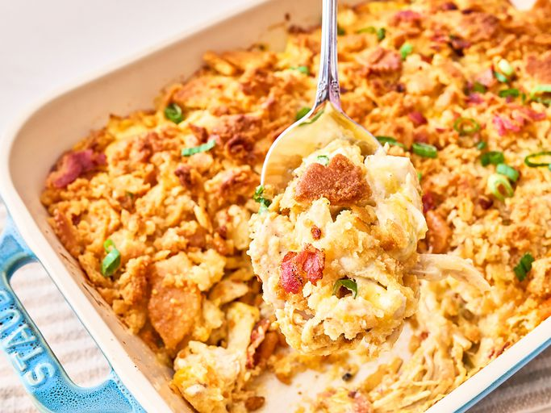

Neiman Marcus Chicken Casserole Recipe
Home

Description
This Neiman Marcus chicken casserole recipe is a casserole version of the famous department store's cafe dish. Saucy chicken, bacon, Cheddar,
and almonds are baked with a buttery cracker topping in this quick-prep dinner.
Ingredients
- 4 cups shredded cooked chicken
- 1 (310ml) can cream of chicken soup
- 1 cup sour cream
- 2 cups shredded Cheddar cheese
- 1/2 cup sliced green onions
- 1/2 cup slivered almonds
- 6 slices bacon, cooked and crumbled
- 1 1/2 hot sauce, or to taste
- 1 sleeve buttery crackers, crushed
- 1/2 cup butter, melted
Steps
- Preheat the oven to 375 degrees F (190 degrees C). Lightly grease a 9x13-inch baking dish.
-
Place chicken, chicken soup, sour cream, cheese, green onions, almonds, bacon, and hot sauce into a large mixing bowl and stir to combine.
Pour mixture into the prepared dish.
- Stir crushed crackers and butter together until combined; spread mixture evenly over casserole.
- Bake in the preheated oven until browned and bubbly, 40 to 45 minutes.
Original recipe found at
Neiman Marcus Chicken Casserole - allrecipes